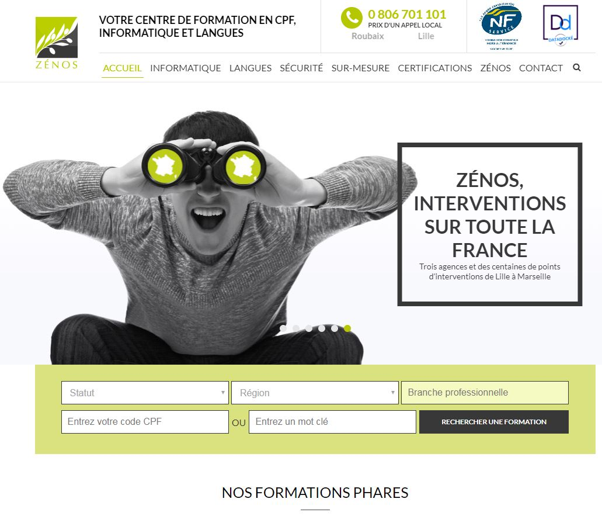

Les difficultés rencontrées à Webqam
17 juillet 2018
La principale difficulté a été de s’adapter aux exigences de l’entreprise et d’appliquer les consignes dictées par les clients.
J’essayais d’apprendre pour que les manipulations deviennent mécaniques, et ainsi je pouvais me plier plus
facilement aux demandes des clients. De plus je travaillais avec des technologies que je ne connaissais pas
ou très peu, j’ai donc dû apprendre au fur et à mesure des projets pour pouvoir travailler plus vite les
fois suivantes. Des technologies comme WordPress ou encore Laravel et VueJS, avec lesquelles j’avais très
peu été en contact avant ce stage, m’ont permis de me professionnaliser et d’en apprendre encore un peu plus
sur le développement web.
Une des difficultés que j’ai rencontrées a été de gérer un conflit avec un client. Je ne l’ai pas géré directement
puisque je n’ai jamais communiqué directement avec le client. En bref, le client a mis à jour des plugins
sur WordPress qu’il n’aurait pas du et rajouter des dossiers à la racine du projet directement sur la version
de production. De ce fait, je n’ai pas vérifié le site de production et est commencé à faire les mises à
jour ainsi que des modifications selon les demandes de ce client en local puis en pre-production, comme je
l’ai toujours fait. Cependant, en essayant de fusionner la branche de pre-production et de production, les
conflits ont commencé et il nous était impossible de revenir à un état précédent comme le client n’utilisait
pas nos méthodes. De plus, le client devait faire une présentation à des investisseurs la journée même, nous
avons donc dû passer toutes les modifications faites qui devaient être prêtes pour leur présentation assez
rapidement en passant directement par le serveur. Cela a été très intense pour moi, du fait de la rapidité
d’exécution à avoir et de l’enjeu par rapport au client. Vous pouvez avoir un aperçu du site sur l'illustration
en dessous et l'adresse du site en question est la suivante :
https://www.zenos.fr/

Le fait de travailler en autonomie la plupart du temps a également été un challenge pour moi qui suis habitué
à travailler à plusieurs. Cependant, lorsque j’avais un problème ou une question je la posais à mes collègues
pour qu’ils puissent m’aider, ceux-ci étaient toujours compréhensifs et me faisaient progresser.
Par conséquent, j’ai su surmonter mes difficultés et progresser sur des technologies différentes ainsi que
d’en apprendre plus sur les conditions de travail dans une entreprise tel que Webqam. Le fait d’avoir
eu une journée plus intense que les autres m’a, je pense, beaucoup aidé et pourra me servir par la suite
pour ne pas reproduire la même erreur et ainsi surmonter aisément cette difficulté.